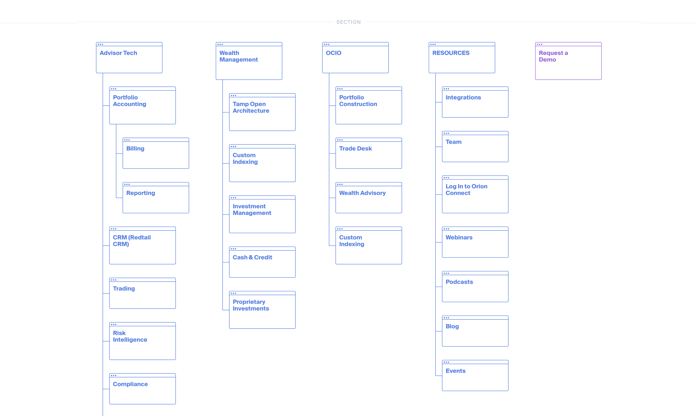
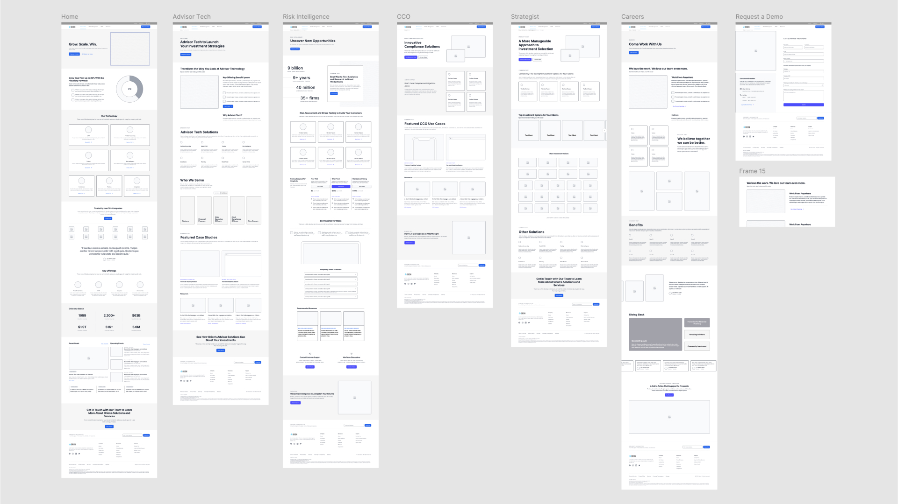
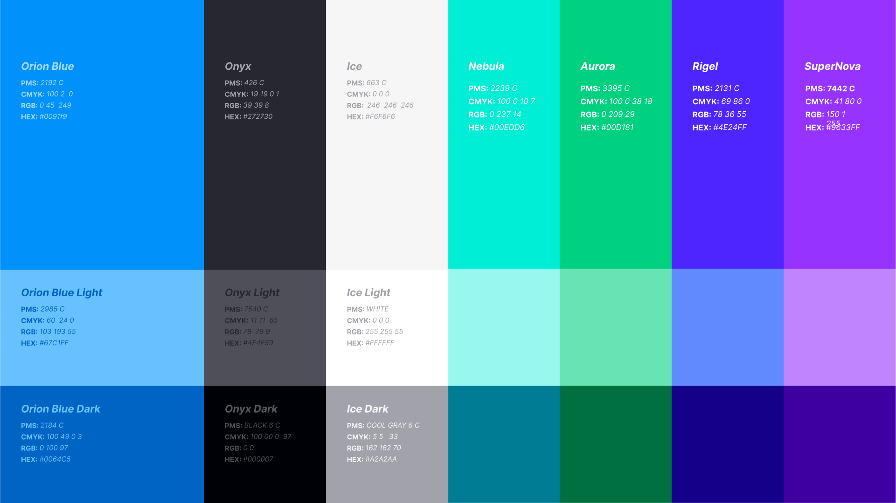
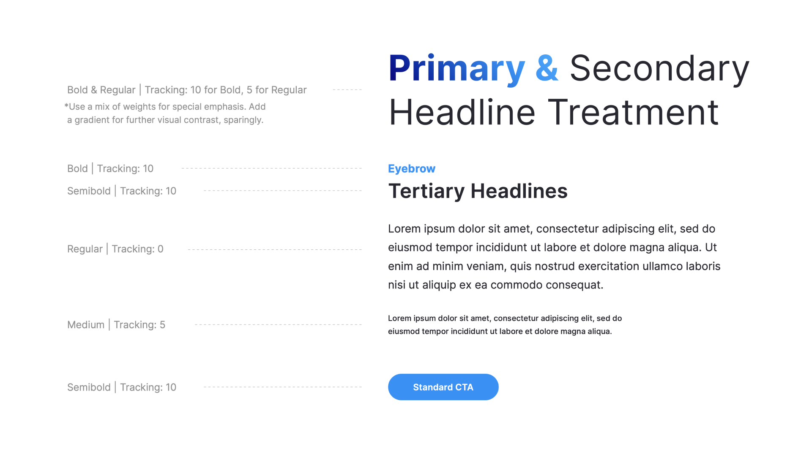
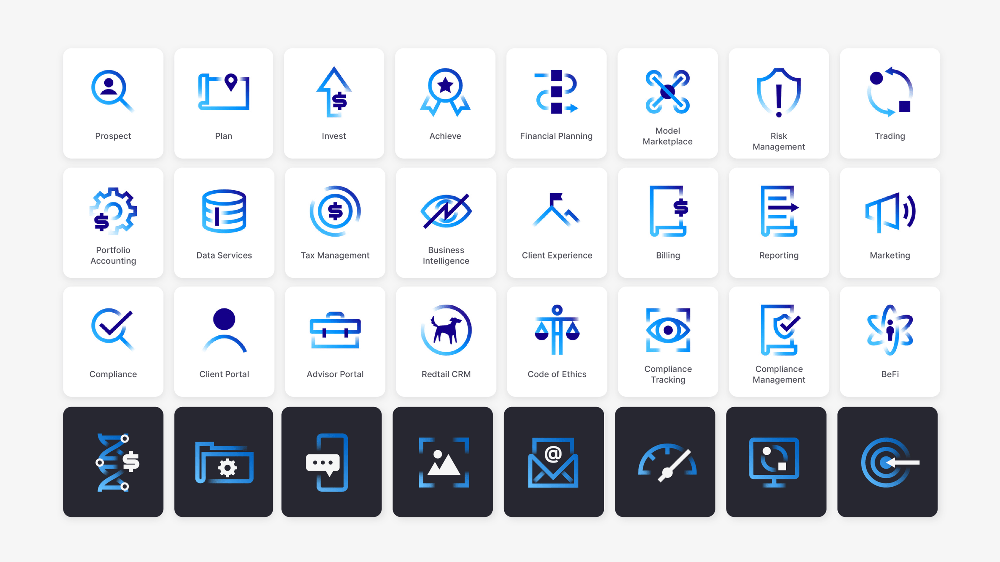
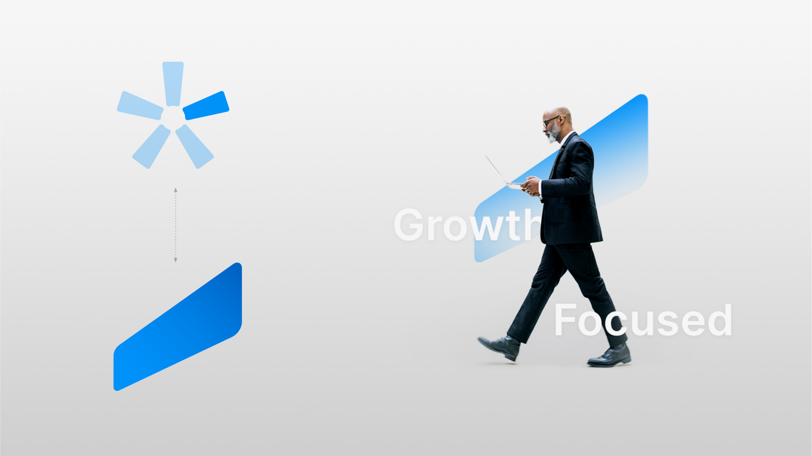
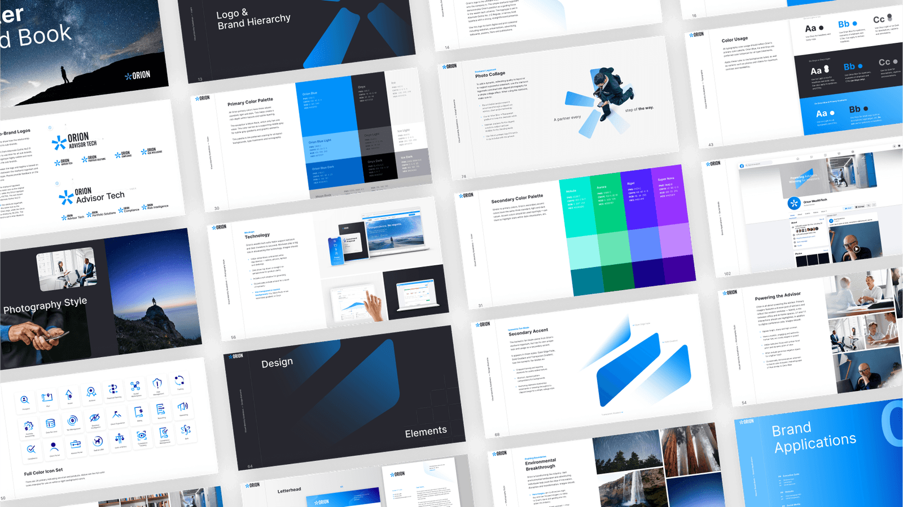
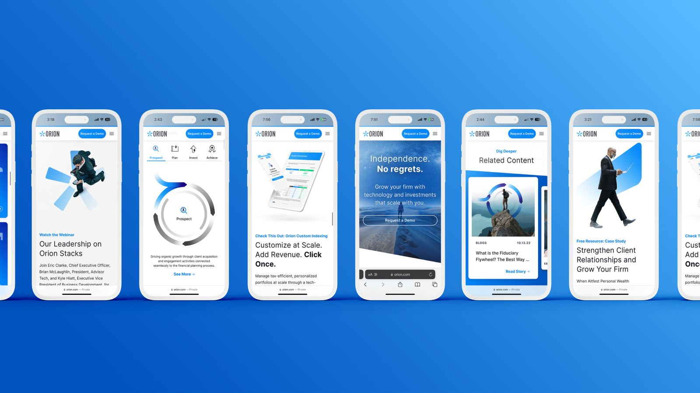
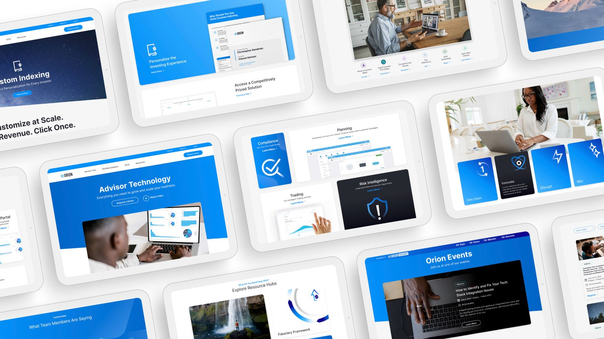
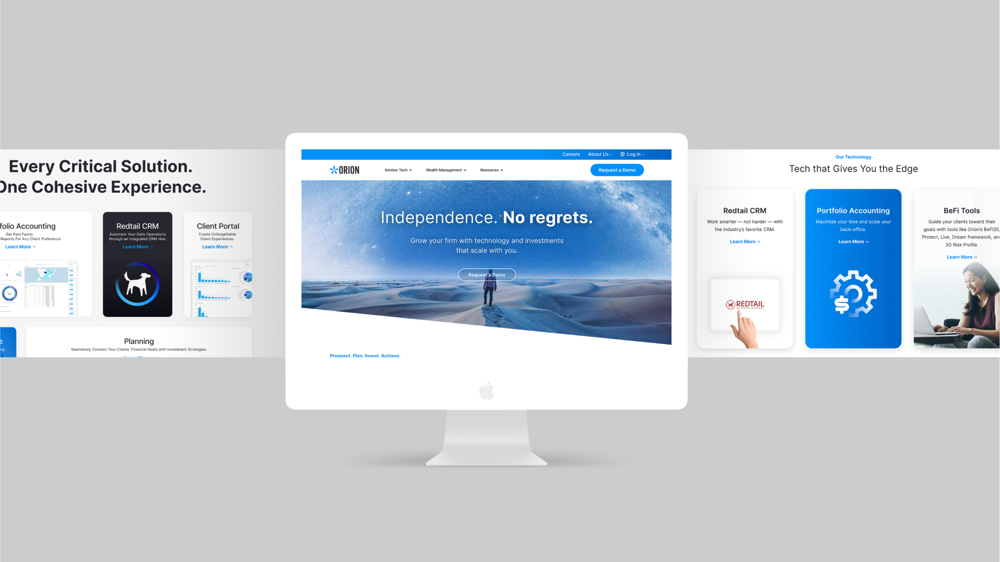

Project Overview
Orion Wealthtech, a forward-thinking wealth management technology firm, had a disconnect between their innovative product offerings and the way they were represented online. Their existing website lacked clarity, cohesion, and modern usability—failing to reflect the sophistication of the technology and services they provided. For a brand at the intersection of finance and innovation, this posed a challenge: how do you build trust while presenting complex solutions in a simple, engaging way?
The Challenge
The goal was to design a modern, user-friendly website that positioned Orion as a leader in wealthtech—while staying grounded in clarity, accessibility, and trust. The platform needed to translate complex technology into a clear, engaging experience for multiple user types, each with distinct goals. To support this, I developed a design system that not only brought consistency to the marketing site but also extended into Orion’s product environment—ensuring alignment across web, app, and platform interfaces. This system laid the groundwork for scalable growth, allowing Orion to evolve both its public-facing presence and internal product experience with cohesion and efficiency.


From Insights to Interface: Building a Scalable Design System
The project began with research into Orion’s brand values, audience expectations, and competitive landscape. I then led the UX and UI design, crafting a system that combined visual storytelling with functional clarity.
A key deliverable was a design system covering typography, color, iconography, and interactivity—built to align design and development, support accessibility, and prevent future design debt.
Working closely with stakeholders, I translated abstract ideas into clear structures and interaction patterns that felt intuitive and modern—replacing financial jargon with concise, user-focused content and visual hierarchy.






A Digital Experience That Reflects the Brand Behind the Tech
The final website was clean, modern, and fully responsive, built on a modular system that could flex as Orion’s offerings grew. Navigation was simplified to prioritize user needs, while content was framed through storytelling and value-first messaging. Interactive features made technical capabilities feel approachable, while subtle visual cues reinforced credibility and trust.
By pairing intuitive navigation with clear communication, the platform transformed how Orion presented its services—creating a digital experience aligned with the quality of its technology.


The Outcome: Driving Conversion, Efficiency, and Brand Alignment Through Scalable Design
The final website was clean, modern, and fully responsive, built on a modular system that could flex as Orion’s offerings grew. Navigation was simplified to prioritize user needs, while content was framed through storytelling and value-first messaging. Interactive features made technical capabilities feel approachable, while subtle visual cues reinforced credibility and trust.
By pairing intuitive navigation with clear communication, the platform transformed how Orion presented its services—creating a digital experience aligned with the quality of its technology.